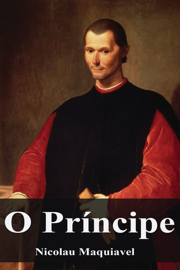

O Príncipe
Preço: R$19.99
Em 1512, a cidade foi invadida, quando houve até mesmo derramamento de sangue, e Maquiavel foi preso e exilado por ser um oficial republicano. Ele escreveu O Príncipe em 1513, durante seu exílio, mas sua obra não foi publicada até 1532, cinco anos após sua morte.
Em 1513, conformou-se com o fato de que Florença seria governada por um príncipe, e assim começou a buscar um meio de se aliar ao novo governante para conseguir uma boa posição e liberdade política.
Maquiavel não se tornou um conselheiro, mas deixou seu legado. Este resumo de O Príncipe condensa suas principais ideias. Ele mudou a forma de ver a política, tratando-a como uma estratégia para a manutenção do poder.